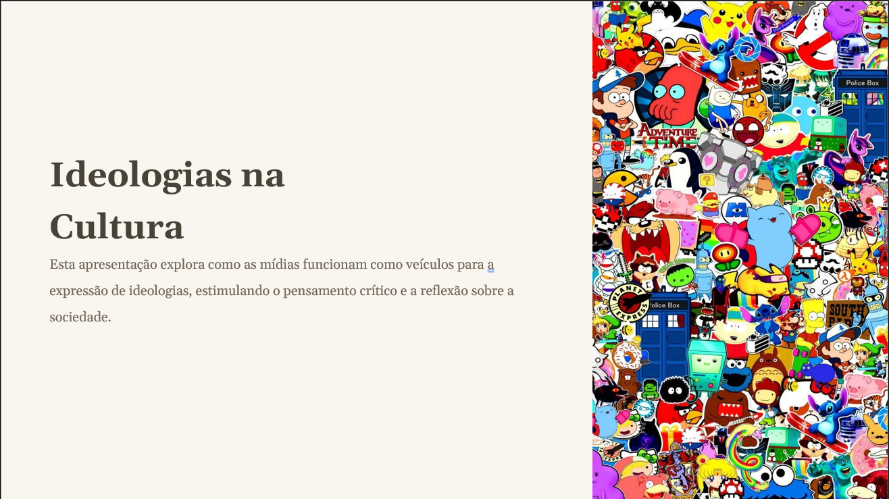

Sobre mim
Portfolio
Habilidades
Contatos
Trabalhos da Faculdade
Currículo
Portfolio – Trabalhos da Faculdade

Ideologias na Cultura
Download
Fundamentos ontológicos e históricos
Download
Pipeline de Visão Computacional e IA
Download
Colab
Ver todos no GitHub